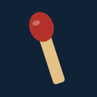

Por si el conteo automático se equivocó.
Tocá la columna de un equipo y se suma un punto. Cada cuadrado de fósforos son 5.
Dejá el dedo apretado para borrar. Si lo seguís apretando, sigue borrando.
A 30 los primeros 15 son las malas y los otros 15, las buenas.
La mano pasa sola unos segundos después de anotar. Tocá la mano o el mazo para cambiarla.
Si te equivocaste, deshacé desde arriba. También podés compartir la partida con un link.
Necesita seguir las manos. Activar